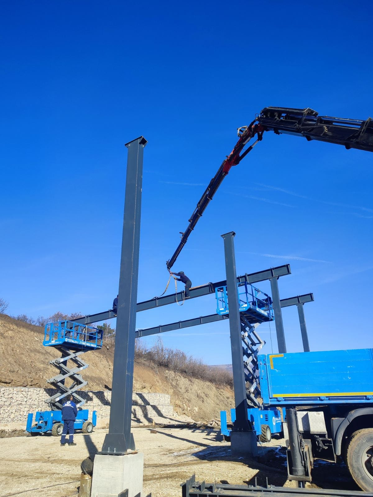

O nama
About us
Weldingmont d.o.o. je kompanija iz Vranja osnovana 2017. godine. Bavimo se izradom i montažom metalnih konstrukcija širom Srbije i Evrope.
Weldingmont Ltd. is a company from Vranje, founded in 2017. We design and install metal structures across Serbia and Europe.
Naše usluge obuhvataju:
Our services include:
- Metalne konstrukcije i montiranje (hale, objekti, mostovi, šipovi, ograde, stepeništa, nadstrešnice, itd.)
- Metal construction assembly (halls, buildings, bridges, posts, fences, stairs, canopies, etc.)
- Obrada metala: sečenje, savijanje, zavarivanje
- Metal processing: cutting, bending, welding
Weldingmont d.o.o. je uspešno implementirao sistem menadžmenta kvalitetom ISO 9001:2015 i BS EN ISO 3834, sertifikaciju je izvršilo renomirano telo Alcumus ISOQAR Limited iz Mančestera.
Weldingmont Ltd. has successfully implemented ISO 9001:2015 and BS EN ISO 3834 quality management systems, certified by Alcumus ISOQAR Limited of Manchester.
